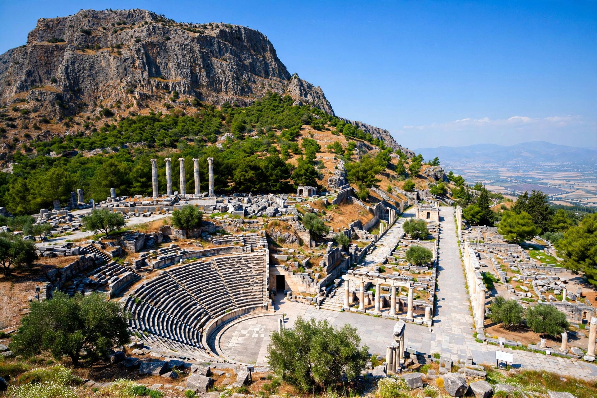

Priene (Ancient Greek: Πριήνη) was an ancient Greek city of Ionia, at the base of an escarpment of Mount Mycale, about 6 kilometres north of the Maeander River in modern western Turkey. It was a member of the Ionian League and one of the best-preserved examples of a Hellenistic planned city.
According to tradition Priene was founded by Aepytus, a descendant of Neleus, around 1000 BC. The original site, probably on the coast when the Maeander delta was further inland, is uncertain. Around 350 BC the city was refounded on its present site, laid out on a regular Hippodamian grid plan attributed in part to the architect Hippodamus of Miletus.
The new city was built under the patronage associated with Alexander the Great, who dedicated its Temple of Athena in 334 BC. Priene remained a modest but prosperous Hellenistic city under successive rule by the Ptolemies, Seleucids, Attalids of Pergamon, and eventually Rome. Silting of the Maeander gradually cut it off from the sea, contributing to its decline in late antiquity. It was largely abandoned by the 13th century AD.
The orthogonal street grid covers a terraced hillside. Major remains include the Temple of Athena Polias, designed by Pytheos; a well-preserved bouleuterion seating about 640; a theatre with a horseshoe orchestra and preserved stage building; an agora, gymnasia, stadium, and the so-called House of Alexander. Private houses in Priene are among the clearest evidence for Hellenistic domestic architecture.
Systematic excavations were conducted by the German Archaeological Institute under Theodor Wiegand from 1895 to 1899, and work has continued since. The finds, including the Priene Inscription relating to Alexander, are divided between museums in Berlin, London and Istanbul.